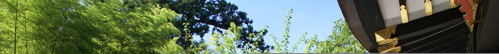
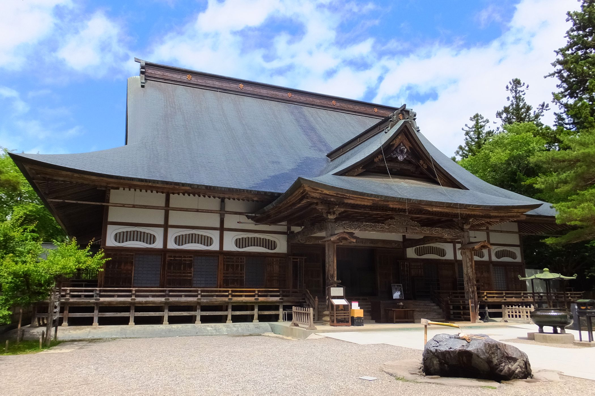

移動ルートマップ
仙台・多賀城・三陸・盛岡・花巻・平泉を結ぶ今回の旅ルート
11:00 〜 12:00
仙台駅集合 🚗
順次合流 / レンタカー受取 / 荷物積み込み / 車割り決定
12:00 〜 13:30
昼食：仙台牛タン 👅
本場の厚切り炭火焼き牛タンを堪能！
14:00 〜 15:30
瑞鳳殿 観光 ⛩️
伊達政宗公が眠る豪華絢爛な霊屋。杉木立の中で写真撮影！

瑞鳳殿
15:30 〜 16:30
仙台市内移動・カフェ休憩 ☕️
カフェでひと息 / お土産の事前チェック
17:00 〜 21:00
仙台七夕まつり 🌌
お祭り本番！豪華な七夕飾り鑑賞、屋台での食べ歩きと写真撮影を全力で楽しむ。
 七夕まつり
七夕まつり
09:00 〜
宿出発 → 三陸ドライブ 🌊
南三陸方面へ。途中の道の駅や展望スポットで海をバックに写真撮影。
 三陸海岸
三陸海岸
11:00 〜 13:00
気仙沼周辺：海の幸ランチ 🐟
【候補】海鮮丼 / 寿司 / 刺身定食。新鮮な三陸の海の幸！
13:00 〜 16:00
三陸海岸 北上ドライブ 🚗💨
海沿い散歩 / 道の駅巡り / ご当地ソフトクリームやグルメハント
17:00 〜 18:30
わんこそば挑戦！＠東家本店 🥢
盛岡の名店でわんこそば対決！みんなで何杯いけるか限界突破。
09:30 〜 11:30
世界遺産 中尊寺・金色堂 🏯
平泉の歴史に触れる。新緑の杉並木を散策、お土産購入。

中尊寺
11:30 〜 12:30
平泉周辺ランチ 🥩
【候補】前沢牛ステーキ・すき焼き / 郷土もち料理 / 定食
12:30 〜 15:00
仙台方面へ移動（復路）
SAで休憩・最後のお土産チェック / 車内で写真の整理・共有
15:00 〜 16:00
仙台駅到着・解散 🏁
レンタカー返却 / 16:00頃、思い出を胸に解散！お疲れ様でした！